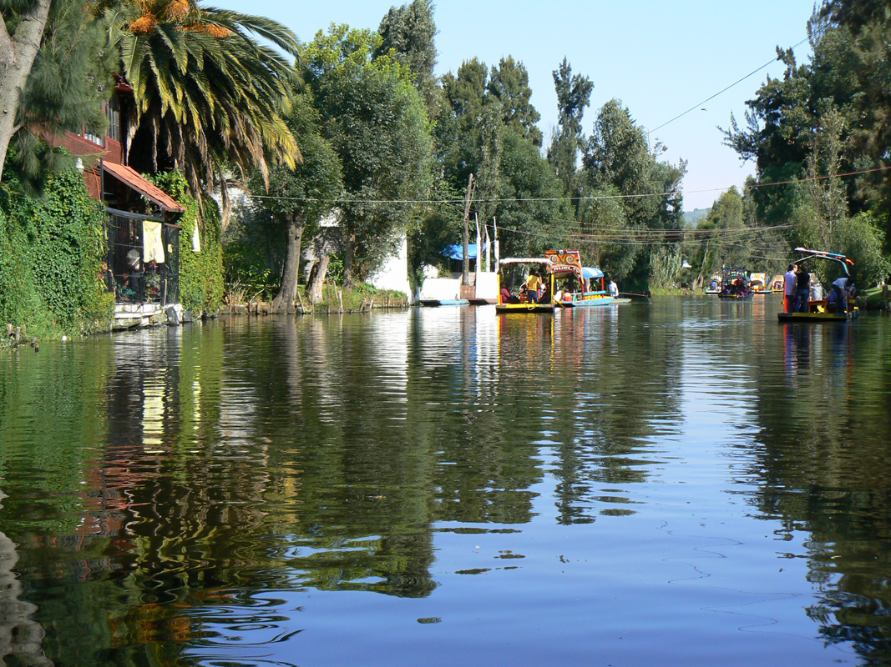
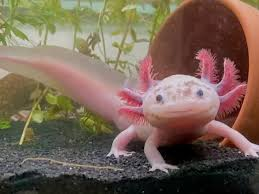
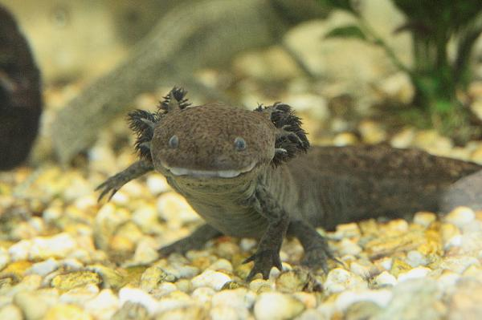
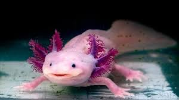

Conoce un poco mejor nuestra misión.

Uno de nuestros principale focos es recuperar el equilibrio del lago de Xochimilco.

Concienciar que tenemos una mision vital más importante que ser mascotas.

Promover una alimentación más saludable a colegas libres y cautivos

Asegurar que no haya un ajolote en el mundo que no sea feliz con la vida que lleva
«Empieza donde estás. Usa lo que tienes. Haz lo que puedas».-Arthur Ashe.
¿Quieres ser un ajolote lovers más
Suscribete y defiende con nosotros los derechos de los ajolotes